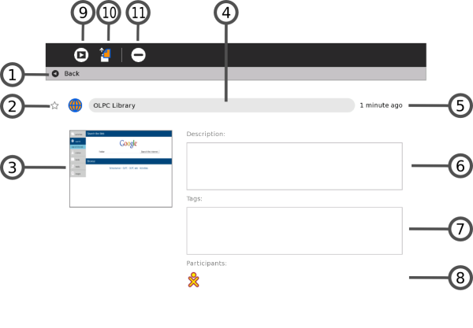

| Le Cadre | Index | Personnaliser Sugar |
L'Activité Journal est un journal enregistrant automatiquement tout ce que vous faites avec Sugar. Les Activités Sugar utilisent le Journal comme lieu de sauvegarde de vos activités. Vous pouvez utiliser le Journal comme un endroit où vous pouvez revoir d'anciens travaux, les y reprendre ou les y compléter, ainsi que pour y voir vos progrès d'apprentissage.
Le Journal conserve ce que vous faites et les objets que vous créez comme des photos, dessins et écrits. Vous pouvez donc rechercher ceux-ci dans le Journal ou encore trier des entrées par type ou par date. Vous pouvez également cliquer sur une entrée du journal pour en avoir une vue détaillée. Vous pouvez y reprendre ou y compléter une Activité en cliquant sur son icône.
Le Journal accepte également des périphériques externes de stockage, comme une clé USB ou une carte SD. Lorsque vous connectez une clé USB au XO, vous pouvez accéder à son contenu via le Journal. Cliquez sur l'icône USB pour en voir le contenu. Vous pouvez également copier des informations du Journal sur un media amovible - tel qu'une clé USB - afin de les sauvegarder. Si vous êtes connecté à un serveur d'école, vous pouvez accéder à son système de sauvegarde.
Pour voir le Journal, cliquez sur l'icône Journal dans le Cadre.
Sur le portable XO, vous pouvez cliquer sur la touche loupe dans la rangée supérieure du clavier afin d'ouvrir immédiatement le Journal et y faire des recherches.
La Vue Journal contient un menu et une liste des entrées:
1. Etoile
Marquez vos entrées importantes en cliquant sur l'icône Etoile devant l'élément. Lorsque vous cliquez sur l'icône Etoile, l'étoile se colore.
2. Icône
Chaque entrée du Journal possède son icône. La couleur de l'icône indique qui a créé l'entrée. Par exemple, si vous copiez une photo d'un ami, l'icône de la photo aura les couleurs de votre ami.
Lancez une Activité en cliquant sur son icône.
Utiliser le menu déroulant pour accéder aux options supplémentaires. Par exemple, l'option "effacer" effacera cette entrée de votre Journal.
Attention: L'option "effacer" supprime toute données associées à l'entrée indiquée. Par exemple, si vous supprimez une entrée indiquant que vous avez installé une Activité, vous supprimerez également l'Activité en question.
3. Nom d'entrée
Chaque entrée possède un nom. Vous pouvez éditer son nom en cliquant dessus. Si la Vue Journal montre le contenu d'un périphérique de stockage amovible, il y figurera le nom du fichier Linux sans son chemin ni son extension.
4. Icônes des amis
Si d'autres participants se joignent à cette Activité, des icônes à leurs couleurs y apparaîtront.
5. Temps écoulé
Le Journal affiche le moment de la dernière modification de l'entrée.
6. Bouton d'accès détaillé
Cliquez sur ce bouton pour voir des informations détaillées au sujet de l'entrée en question. Reportez vous à la "Vue d'accès détaillée" ci-dessous.
7. Barre de défilement
Quand il y a plus d'entrées sur le Journal que ce qui peut être montré à l'écran, vous pouvez utiliser la barre de défilement pour les parcourir.
8. Boîte de recherche
Dans cette case, saisissez les mots dont vous recherchez des entrées qui correspondent. Les entrées qui contiennent tous les mots saisis seront affichées.
Une comparaison sera faite entre :
Note: la petite touche x à droite de la boîte indique que la recherche est en cours. Pour l'annuler, cliquez sur ce x.
9. Sélection par type
Choisissez un type d'entrée pour afficher uniquement les entrées de ce type. Les types peuvent comprendre l'Activité qui a créé l'entrée ou le type de l'objet, par exemple une photo, un enregistrement sonore ou un dessin.
10. Filtre par date
Vous pouvez limiter votre Vue Journal aux entrées faites durant le dernier jour, la dernière semaine ou le dernier mois.

La Vue détaillée apparaît lorsque vous cliquez sur le bouton Vue détaillée. Cette Vue vous permet d'examiner et d'annoter l'entrée.
1. Icône de retour en arrière
Cliquez n'importe où sur cette ligne pour retourner à la Vue principale du Journal.
2. Etoile et icône
Ces objets ont la même fonction que sur la Vue principale du Journal - une étoile représentant une inscription spéciale, jamais effacée du Journal -, et les couleurs de l'icône indiquent son créateur.
3. Miniature
Chaque entrée possède une miniature, qui est créée automatiquement. L'image montre l'écran de l'Activité lorsque la dernière modification de l'entrée au Journal a été sauvegardée.
4. Nom de l'entrée
Vous pouvez modifier le nom de l'entrée en cliquant dessus et en y saisissant un nouveau nom.
5. Temps écoulé
Cette fonction affiche le temps écoulé depuis la dernière modification de l'entrée.
6. Description
Vous pouvez y saisir une description de l'entrée; vous pourrez par la suite l'utiliser pour la retrouver en utilisant la case Recherche dans la Vue principale du Journal. Utilisez une description pour vous souvenir de ce que vous avez fait. Par exemple, "Les fleurs que j'ai vue lors d'une excursion à la chute d'eau."
7. Étiquettes
Vous pouvez entrer des étiquettes pour faciliter les recherches. Utilisez pour cela des mots-clés décrivant cette entrée afin de la retrouver via la boîte de recherche dans la Vue principale du Journal. Ces mots-clés vous permettront de regrouper les entrées similaires, par origine ou par contexte.
8. Participants
Cette fonction affiche les icônes XO de chaque personne ayant participé à une Activité partagée.
9. Bouton reprendre
Cliquez sur ce bouton lorsque vous voulez reprendre une Activité. Le menu déroulant vous permettra de découvrir des options supplémentaires. Par exemple, il est possible de reprendre votre travail sur une image en utilisant aussi bien le navigateur que l'Activité Dessiner.
10. Bouton copier
Vous pouvez copier une entrée du Journal vers le presse-papiers (ou vers l'un des médias de stockage amovibles indiqués sur le bord inférieur de l'écran du Journal) en cliquant sur le bouton Copier.
11. Bouton effacer
Vous pouvez effacer une entrée en cliquant sur ce bouton. Attention: Une fois que vous aurez effacé une entrée, elle ne pourra être restaurée - à moins que le Journal n'ai été sauvegardé.
En retournant sur la Vue détaillée, vous pouvez faire votre choix parmi les différentes Activités.
Lorsque vous insérez un périphérique amovible - comme une clé USB ou une carte SD -, son icône apparaît dans la bordure inférieure de la Vue Journal.
1. Journal
Cliquez sur l'icône Journal pour faire apparaître la Vue Journal.
2. Dispositif USB
Cliquez sur l'icône USB (ou SD) pour faire apparaître les fichiers du périphérique amovible.
Vous pouvez envoyer les entrées du Journal vers un périphérique USB. Vous pouvez également amener des éléments depuis un périphérique USB vers votre Journal.
Pour supprimer (démonter) le système externe de fichier, choisissez démonter dans le menu déroulant.
Attention: Cela peut prendre du temps pour que le menu déroulant apparaisse: de plus, il est très facile de faire une erreur et de cliquer sur l'icône elle-même alors que vous auriez voulu cliquer sur démonter.
Attention: Si vous avez une activité Terminal en train de s'exécuter, vous pouvez - par mégarde - bloquer votre périphérique amovible. Le plus sûr moyen de retirer un périphérique est de le faire après avoir éteint votre ordinateur.
Note pour les parents et les enseignants
Le Journal conserve un enregistrement de tout ce qu'a fait un enfant via Sugar: quelle Activité a été utilisée et quel contenu a été créé. Il conserve également un enregistrement des Activités de groupe, telle qu'une participation à une session "Écrire" ou "Naviguer".
Le Journal encourage la réflexion, et vous pourrez y évaluer les progrès de l'enfant ayant á l'esprit une évaluation "portfolio" (portefeuille de compétences). Vous pourrez également l'utiliser comme catalyseur en vue d'une discussion avec votre enfant ou votre étudiant. Nous encourageons l'utilisation du champ de description via la Vue détaillée du Journal pour annoter ou commenter les entrées.
| Le Cadre | Index | Personnaliser Sugar |